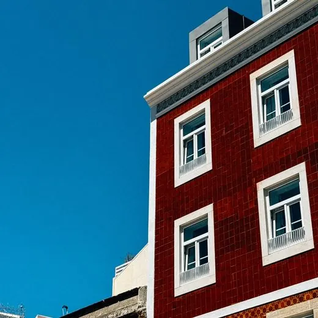
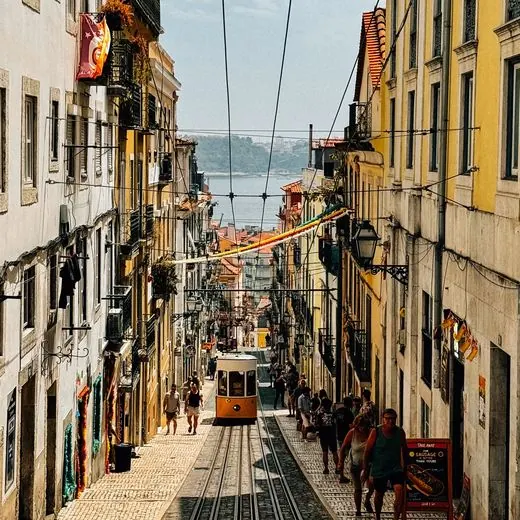
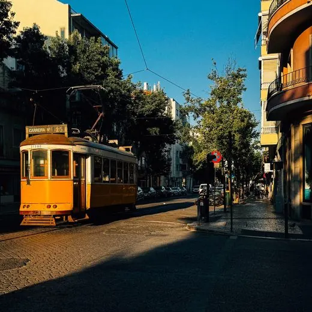
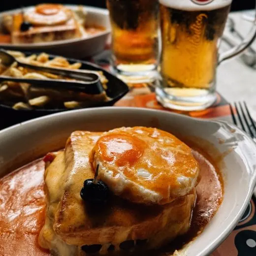
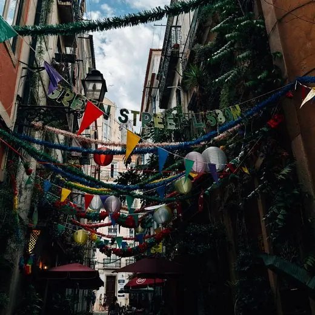
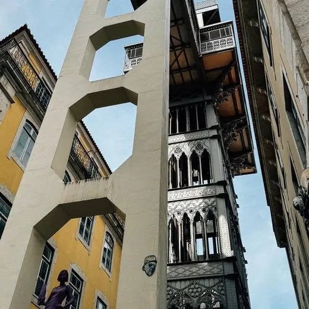
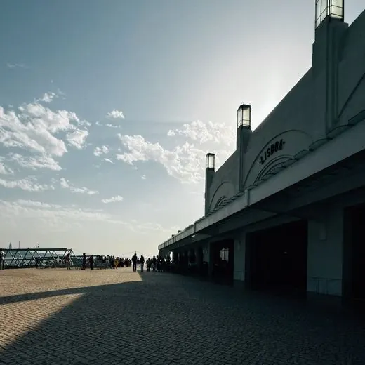
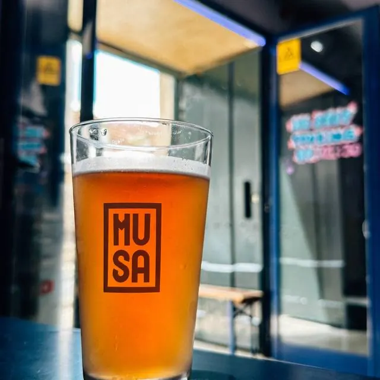

Pulgas e antiguidades
Feira da Ladra
Campo de Santa Clara, atrás do Mosteiro de São Vicente de Fora
Terças e sábados. A mais antiga de Lisboa, com séculos de história: vale chegar de manhã.
publicitária e chata com critério
turista onde mora ✧
Sou brasileira e já morei na Irlanda, mas o céu azul de Portugal é mais bonito. Hoje moro em Lisboa e olho a cidade como quem acabou de chegar, só que com critério: vou, provo, volto se valeu, e conto aqui o que aprovo e o que eu passo.
O resto do tempo é caderno, câmera, uma sour no copo e uma playlist que vai de Deftones e Men I Trust a Lagum sem pedir licença.
por que nandamto?
É a abreviação de Nanda Monteiro: nanda + mto.
o que eu fotografo quando ninguém está olhando








segunda, quinta e sexta ✧
formatos
Reels cinematográfico, carrossel com cara de scrapbook e foto com grão. Tudo no Instagram, no TikTok e no YouTube.
a ✧ não é estrela de avaliação, é assinatura
pelo critério de uma patricinha da cerveja

do primeiro ao quarto, sem empate
a favorita e as que também valem
sem concorrência
próximos postais
Cafés.
parcerias, convites e dicas de lugar
Sua web amiga chata com critério. Fui, provei, voltei (ou não) e anotei tudo aqui, com nota e carimbo, pra você decidir se vale a ida antes de sair de casa.
Terças e sábados. A mais antiga de Lisboa, com séculos de história: vale chegar de manhã.
Todo domingo. Vintage, artesanato, discos e comidinhas dentro da antiga fábrica.
Último sábado e última segunda-feira do mês, das 10h às 18h. Aos sábados de manhã (7h às 14h) tem também o mercado biológico.
Todo ano, entre o fim de maio e meados de junho. Em 2027 vai de 26/05 a 13/06.
Do fim de novembro ao começo de janeiro. Em 2025 foi de 28/11 a 04/01; as datas de 2026 ainda não saíram.
De meados de novembro até perto do Natal. Em 2025 foi de 15/11 a 22/12.
Na primeira quinzena de dezembro. Em 2025 foi de 04 a 17/12.
O que eu uso, leio e escuto de verdade, avaliado com a mesma ficha e o mesmo carimbo dos lugares.
Um formulário pra você me mandar aquele lugar que eu ainda não julguei.
elogios e críticas, tudo vale
Nanda é exigente demais afff
quem já saiu comigo pra jantar
Sommelier de batata frita
quem divide a porção comigo
A eterna luta contra a intolerância a lactose
quem me viu pedir pizza mesmo assim